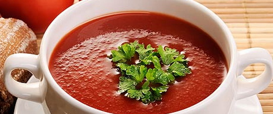

Калорійність
500 кал

Складові:
1 кг помидорів
2 зубчики часнику
2 ст. ложки оливкової олії
2 ст. л. соку лимона
мускатний горіх
зелень чебрецю і базиліка
чорний перець і сіль за смаком
Рецепт:
Цей літній супчик буде як не можна, до речі, під час відпусток, коли жарко і зовсім немає бажання перебувати біля плити. А тут – беремо кілограм томатів, ошпарюємо, знімаємо шкірку, ріжемо навпіл і прибираємо насіння. Після просто змішуємо в блендері м’якоть з 2 перетертими зубками часнику, 2 ст. ложками оливкової олії, 2 ст. л. соку лимона і малою кількістю мускатного горіха, зелень чебрецю і базиліка, а також чорний перець і сіль додаємо за смаком.
Смачного!